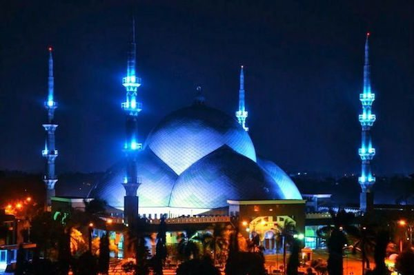
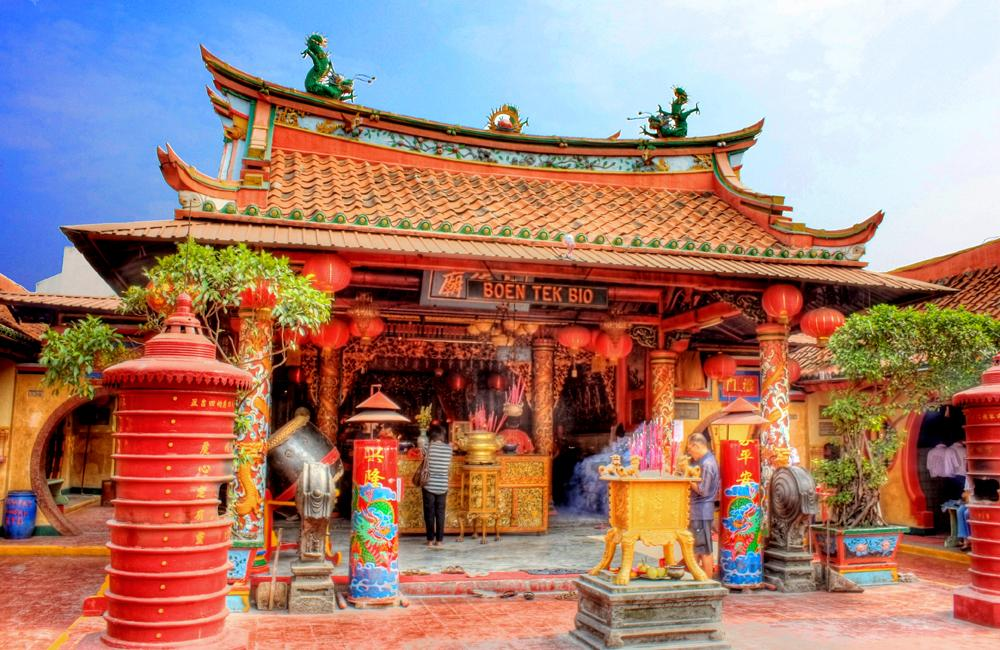
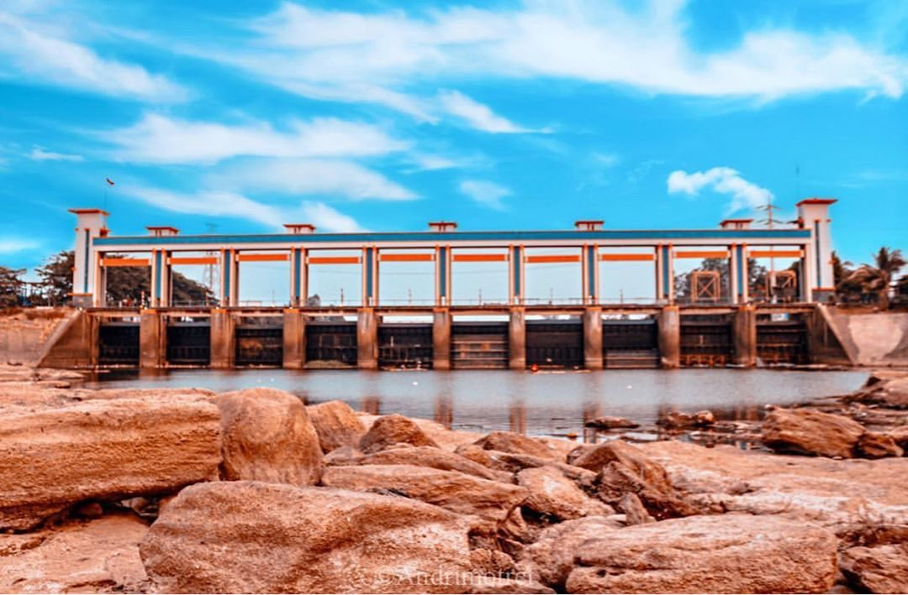

History In Tangerang City

Masjid Raya Al-Azhom
Masjid Raya Al-Azhom adalah masjid bersejarah dikota Tangerang yang memiliki kubah masjid terbesar.

Masjid Pintu Seribu
Masjid ini merupakan suatu kompleks besar yang sebagian di antaranya terdapat lorong serta pintu.
Vihara Padumuttara
Vihara Padumuttara adalah tempat ibadah umat budha terbesar dikota tangerang


Museum Benteng Heritage
Museum Benteng Heritage merupakan hasil restorasi sebuah bangunan berasitektur tradisional Tionghoa.